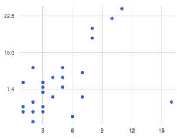
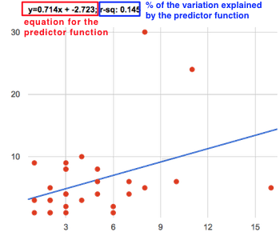
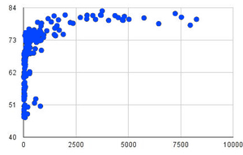

Students interpret linear regression data for the animals table
Students use linear regression to quantify patterns in their chosen dataset, and write up their findings
Standards and Evidence Statements:
Standards with prefix BS are specific to Bootstrap; others are from the Common Core. Mouse over each standard to see its corresponding evidence statements. Our Standards Document shows which units cover each standard.
Data 3.1.3: Explain the insight and knowledge gained from digitally processed data by using appropriate visualizations, notations, and precise language.
Visualization tools and software can communicate information about data.
Tables, diagrams, and textual displays can be used in communicating insight and knowledge gained from data.
Summaries of data analyzed computationally can be effective in communicating insight and knowledge gained from digitally represented information.
Data 3.2.1: Extract information from data to discover and explain connections, patterns, or trends.
Large data sets provide opportunities and challenges for extracting information and knowledge.
Large data sets provide opportunities for identifying trends, making connections in data, and solving problems.
Computing tools facilitate the discovery of connections in information within large data sets.
Information filtering systems are important tools for finding information and recognizing patterns in the information.
Software tools, including spreadsheets and databases, help to efficiently organize and find trends in information.
HSS.ID.B: Summarize, represent, and interpret data on two categorical and quantitative variables
Summarize categorical data for two categories in two-way frequency tables. Interpret relative frequencies in the context of the data (including joint, marginal, and conditional relative frequencies). Recognize possible associations and trends in the data.
Represent data on two quantitative variables on a scatter plot, and describe how the variables are related.
Fit a function to the data; use functions fitted to data to solve problems in the context of the data. Use given functions or choose a function suggested by the context. Emphasize linear, quadratic, and exponential models.
Fit a linear function for a scatter plot that suggests a linear association.
HSS.ID.C: Interpret linear models
Interpret the slope (rate of change) and the intercept (constant term) of a linear model in the context of the data.
Compute (using technology) and interpret the correlation coefficient of a linear fit.
S-ID.7-9: The student interprets linear models representing data
use of the context of the data to interpret the slope (rate of change) and the intercept (constant term) of a linear model
Length: 80 Minutes
Glossary:
correlation: A relationship between two data sets
line of best fit: a straight line that best represents the data on a scatter plot
linear regression: a linear approach for modeling the relationship between a dependent variable, and one or more explanatory variables
predictor: a function which, given a value from one data set, tries to predict a related value in a different data set
r-squared: A number between 0 and 1 that measures the strength of association between two variables
Materials:
Preparation:
Computer for each student (or pair), with access to the internet
Introduction"Younger animals are cuter, and therefore get adopted faster". We started the previous Unit with this question, and looked at scatter plots as a way to visualize possible correlations between two variables in our dataset. What did we find?
Whenever there’s a possible correlation, Data Scientists try to draw the line of best fit, which cuts through the data cloud and can be used to make predictions. This line is literally graphed on top of the scatter plot as a function, called the predictor. In this Unit, you’ll learn how to compute the line of best fit in Pyret, and how to measure the strength of a correlation (or "how good the predictor is").
Open your "Animals Dataset (w/Functions)" file. (If you do not have this file, or if something has happened to it, you can always make a new copy.)
Linear Regression
Overview
Learning Objectives
Students learn about linear regression as a tool for quantifying correlations
Students learn how to interpret the results of a linear regression
Evidence Statementes
Product Outcomes
Students interpret linear regression data for the animals table
Materials
Preparation
Linear Regression(Time 30 minutes)
Linear Regression
After our last Unit, we are left with two questions:
How do we make a prediction from a scatter plot? In other words, "where do we draw the line of best fit?"
How do we measure the accuracy of our prediction? In other words, "how well does that line fit?"
Data scientists use a statistical method called linear regression to search for certain kinds of relationships in a dataset. When we draw our predictor line on a scatter plot, we can imagine a rubber band stretching between the line itself and each point in the plot - every point pulls the line a little "up" or "down". Linear regression is the statistics behind the line of best fit.
You can see this in action, in this interactive simulation. Each vertical line represents the error, or the amount the rubber band has to stretch between a single data point and the prediction line. The "Target SSE" shows how much error (specifically, "the Sum of the Squared Errors") there is in the best possible predictor line. Our goal is to match that, by moving the red line or the "guide dots" on it.
Could the predictor line ever be above or below all the points? Why or why not?
What would the plot have to look like for SSE to be zero?
Give students some time to experiment here! Can your students come up with rules or suggestions for how to minimize error?
We can compute our own predictor line in Pyret, plot it on top of a scatterplot, and even get the equation for that line:
lr-plot is a function that takes a Table and the names of columns to use for xs and ys, computes the line of best fit, and then draws it on top of the point cloud.
In the Interactions Area, create a labeled-lr-plot for our animals-table, using "names" for the labels, "age" for the x-axis and "weeks" for the y-axis.
You can learn more about how a predictor is created by watching this video.
If you want to teach students the algorithm for linear regression (calculating ordinary least squares), now is the time. However, this algorithm is not a core portion of Bootstrap:Data Science.

The resulting scatterplot looks like those we’ve seen before, but it has a few important additions. First, we can see the line of best fit - or our predictor function - drawn on top. We can also see the equation for that line, in the form . In this plot, we can see that the slope of the line is , which means that each extra year of age results in an extra 0.714 weeks of waiting to be adopted. By plugging in an animal’s age for , we can make a prediction about how many weeks it will take to be adopted.
If an animal is 5 years old, how long would this line of best fit predict they would wait to be adopted? What if they were a newborn, and 0 years old?
A predictor only makes sense within the range of the data that was used to generate it. For example, if we extend our line out to where it hits the x-axis, it appears to predict that "unborn animals are adopted instantly"! Statistical models are just proxies for the real world, drawn from a limited sample of data: they might make a useful prediction in the range of that data, but once we try to extrapolate beyond that data we quickly get into trouble!
These charts also include something called an r-squared value at the top, which always seems to be between 0 and 1. What do you think this number means?
Turn to Page 69. For each plot, circle the chart that has the best predictor. Then, give that predictor a grade between 0 and 1.
The r-squared value for a predictor is a number that tells us "how much of the variation in the scatter plot is explained by this line". In other words, it’s a measure for how well the line fits. A perfect score of 1.0 means that 100% of the variability in the data is explained by the function and that every point falls exactly on the line. A score of 0.0 means that none of the variability is explained by the predictor.
What is the r-squared value for age vs. weeks for our entire shelter population? What about for just the dogs? What does this difference mean?
What does it mean when a data point is above the predictor line?
What does it mean when a data point is below the predictor line?
If you only have two data points, why will the r-squared value always be 1.0?
It’s always possible to draw a line between points, so any predictor for a 2-item dataset will be perfect! Of course, that’s why we never trust correlations drawn from such a small sample size!
An r-squared value of 0.60 or higher is typically considered a strong correlation, and anything between 0.40 and 0.60 is "moderately correlated". Anything less than 0.40 is such a weak correlation that it might as well be random. However, these cutoffs are not an exact science! Different types of data may be "noisier" than others, and in some fields an r-squared value of 0.50 might be considered impressively strong!
Show a scatter plot and line-of-best-fit for the following relationships:
The age vs. weeks waiting for adoption, but just for the dogs in the shelter.
The pounds vs. weeks waiting for adoption, but just for the cats in the shelter.
The age vs. pounds of the animals, but just for animals that have been fixed.
When looking at just the dogs, we found that our predictor had an r-squared value of about 0.25. That means that 25% of the variation in adoption times is due to the age of the dogs. Turn to Page 70 to see how Data Scientists would write up this finding.
Write up two other findings from the linear regressions you performed on this dataset.
Have students read their text aloud, to get comfortable with the phrasing.
Correlation does NOT imply causation.
It’s worth revisiting this point again. It’s easy to be seduced by large r-squared values, but Data Scientists know that correlation can be accidental! Here are some real-life correlations that have absolutely no causal relationship:
"Number of people who drowned after falling out of a fishing boat" v. "Marriage rate in Kentucky" ()
"Average per-person consumption of chicken" v. "US crude oil imports" ()
"Marriage rate in Wyoming" v. "Domestic production of cars" ()
All of these correlations come from the Spurious Correlations website. If time allows, have your students explore the site to see more!
Your Dataset
Overview
Learning Objectives
Evidence Statementes
Product Outcomes
Students use linear regression to quantify patterns in their chosen dataset, and write up their findings
Materials
Preparation
Your Dataset(Time 30 minutes)
Your Dataset
Turn back to Page 66, where you listed possible correlations. Use Table Plans and the Design Recipe to investigate these correlations. If you need blank Table Plans or Design Recipes, you can find them at the back your workbook, just before the Contracts.
What correlations did you find? Did you need to filter out certain rows in order to get those correlations? Write up your findings by filling out Page 71.
Have several students read their findings aloud.
Closing
Overview
Learning Objectives
Evidence Statementes
Product Outcomes
Materials
Preparation
Closing(Time 10 minutes)
Closing
You’ve learned how linear regression can be used to compute a linear relationship for a cloud of data, and how to determine the error of that relationship. The word "linear" means "in a straight line", which is why all of our predictors are in a straight line. In the image on the right, there’s clearly a pattern, but it doesn’t look like a straight line! There are many other kinds of statistical models out there, but all of them work the same way: given a particular kind of mathematical function (linear or otherwise), figure out how to get the "best fit" for a cloud of data.